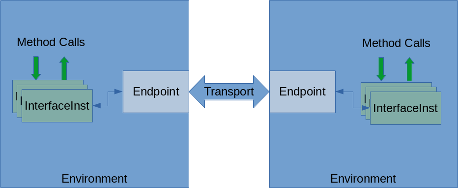
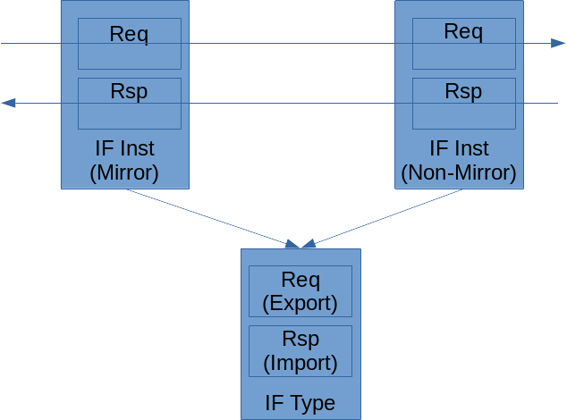

TbLink RPC Architecture
Due to the requirements for flexibility and scalability, TbLink RPC uses a layered architecture. It’s reasonable to think of this layered architecture as being similar to a network stack.
Concept Model
Let’s start with some key concepts that are used across the document. There is implementation behind these concepts, but it’s useful to understand their purpose at a high level before diving into the details.
Environments and Endpoints
TbLink RPC exists to allow simulation-centric environments to communicate. Each pair of communicating environments has a pair of connected endpoints. An environment may communicate with multiple other environments, but each pair of connected environments may only be connected by a single pair of TbLink RPC endpoints.
One result of TbLink RPC being simulation-centric is the requirement to synchronize and control time. For example, when one environment is a simulator and the other is a testbench, it is critical to ensure that the simulation advances only once the testbench has responded to all pending simulation events. If this requirement isn’t met, our ability to properly interact with the design under test (DUT) will be impaired.
TbLink RPC is not a simulator co-simulation framework, with support for synchronizing the operation of multiple simulators each with their own notion of time. Consequently, one environment is considered the Timebase Provider. The Timebase Provider environment maintains the current time for all environments, and provides support for time-based callbacks.
Note
TbLink RPC doesn’t enforce the restriction on having only a single Timebase Provider. This restriction is simply a pragmatic one, given the implementation of capabilities of most simultors today.
Methods, Interfaces, and Interface Types
TbLink RPC environments communicate via method calls. Method calls are made with respect to interface instances. Each interface instance has an interface type, which captures which methods are available.
An interface type specifies type and usage information about methods. Specifically, it captures:
The return type of the method
Method parameter names and types
Whether the method is time-consuming
Whether the method is an export or an import.
This last bit – export vs import – is of critical importance. An imported method is called by the environment, while an exported method is implemented by the environment and called by TbLink RPC in response to a call from the peer environment.
Both connected interface instances have the same interface type. However, one is designated a mirror interface. A mirror interface implements the “mirror” of methods, so an export method is implemented as an import on a mirror interface, and an import method is implemented as an export.
Note
The terminology of import, export, and mirror comes from the vocabulary of Transaction-Level Modeling and IP-XACT IP encapsulation.
When defining an interface type, whether a method itself is an import or an export is entirely irrelevant. For example, the interface type above could have been defined with Req being an import and Rsp being an export. The practical impact of this decision would be that the right-hand interface instance would need to be specified as a mirror and the left-hand interface instance would need to be specified as a non-mirror in order to preserve the caller/called relationship.
Methods may be denoted as either time-consuming or non-time-consuming. This is a critical distinction precisely because TbLink RPC is targeted at enabling communication with simulation environments. When non-time-consuming methods are called, TbLink RPC understands that time in the simulation environment must not advance. When time-consuming methods are called, TbLink RPC understands that it may be necessary for time in the simulation environment to advance before the method call is complete.
Implementation Model
Implementation of TbLink RPC is split into two major components: user facades and core implementation. As the name suggests, the user facade is the primary aspect of interest to end users. The implementation core is primarily of interest to developers wishing to extend TbLink RPC to support another front-end language and/or simulator integration.
User Facade
Every language and language methodology used for functional verification and with simulation models time and events in some form. In standard fashion, different languages and methodologies represent these same concepts in different ways. For example, SystemVerilog represents time-consuming methods as tasks and language constructs for modeling events, while Python represents the same concept using async methods and classes in the standard library.
The purpose of language- and methodology-specific facades is to adapt TbLink RPC to the appropriate language- and methodology-specific constructs.
The adaptation can go far beyond just adapting TbLink RPC to threading and event constructs supported by the target environment. For example, Python provides rich introspection and annotation capabilities that enable the user to capture meta-data for TbLink RPC directly in Python instead of in a separate side file.
import tblink_rpc
import ctypes
@tblink_rpc.iftype("rv_bfms.initiator")
class RvInitiatorBfm(object):
@tblink_rpc.exptask
async def req(self, data : ctypes.c_uint64):
pass
@tblink_rpc.impfunc
def rsp(self):
pass
The code snippet above shows interface-type information captured as annotations on the Python class that implements an interface instance. Other environments may have similar environment- or language-specific mechanisms that provide enhanced capabilities when TbLink RPC is used with that environment.
Core Implementation
The User Facade layer is characterized by differences. It’s goal is to provide the best user experience possible based on the target environment. In contrast, the Core Implementation layer is characterized by similarity. In nearly all cases, the Core Implementation layer for different languages and environments have identical APIs, or very nearly identical APIs.
In many cases, this similarity is very important because of cross-language reuse of the Core Implementation layer. For example, when a SystemVerilog is connected via a socket to an executable running as a separate process, the SystemVerilog Core Implementation layer uses the C++ Core Implementation layer to implement process management and socket communication.
With that, let’s dive into the key objects in the Core Implementation layer.
Core - Event-driven and non-blocking
Endpoint (API)
Endpoint Transport
Endpoint Launcher